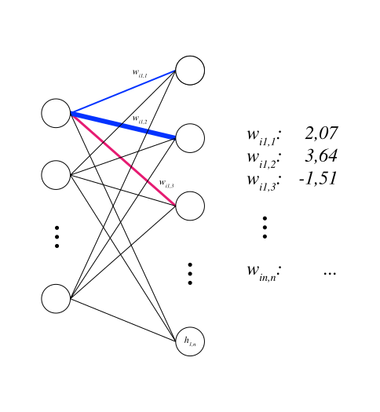
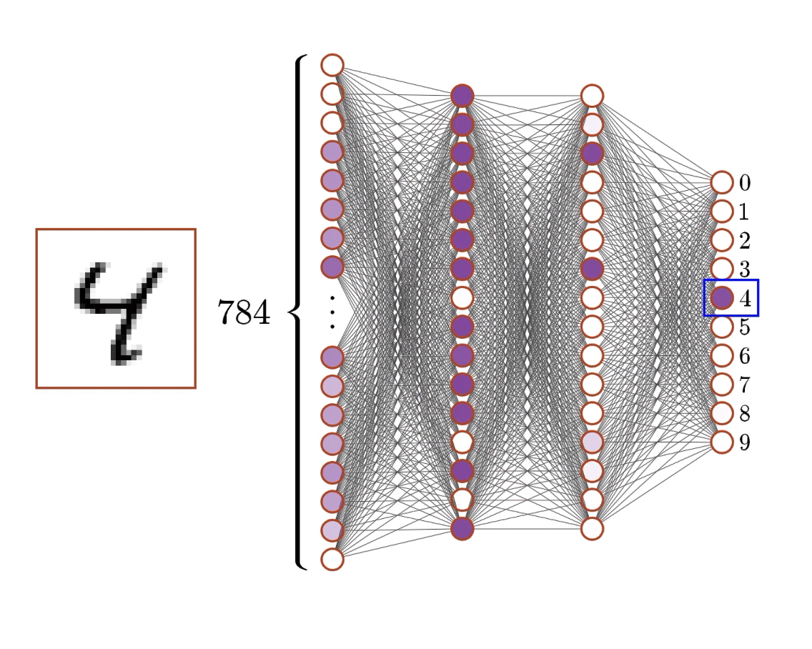

Introduction to AI (I2AI)
Neu-Ulm University of Applied Sciences
December 6, 2026
The digit classifier from the notes keeps confusing 4 and 9.
What could you change to improve the classifier?
Think alone 1 min, then discuss with your neighbour 2 min.
03:00
A neuron receives inputs, weights them, sums up and (maybe) activates.

From 28×28 pixels
to a neural network
to 10 probabilities

A single neuron has two inputs with weights \(w_1 = 0.5\), \(w_2 = -0.4\), bias \(b = 0.1\). You feed it one example: \(x_1 = 1.0\), \(x_2 = 0.0\). The correct answer is \(y = 1\).
Tasks (pairs)
15:00
Digits have fixed size; language has variable length and order matters. The transformer is built for sequences.
Running example: “Was the bank flooded?”
Embeddings are a starting point, not a meaning.
“Bank” maps to the same vector in every sentence, financial or river. That is the problem attention solves next.
Each token produces three vectors via learned matrices:
Query \(W_Q\): what context do I need?Key \(W_K\): what context can I offer?Value \(W_V\): what information do I send?For every token, in parallel:
Query · Key for each pair, how relevant is each token to me?Value vectors using those weightsAttention does not pick one token; it weights all of them.
For “bank”: \(0.6 \times V(\text{flooded}) + 0.3 \times V(\text{was}) + 0.1 \times V(\text{the}) + \dots\) → the riverbank meaning.
The last token’s final vector carries the whole context, since through attention it has seen every earlier token.
\(P(t_i) = \frac{e^{s_i / T}}{\sum_j e^{s_j / T}}\)
“The trophy did not fit in the suitcase because it was too big.”
After “The trophy was too”, the model outputs raw scores: big: 2.0, large: 1.0, heavy: 0.5.
True ore false?
15:00
How a network learns
Transformers & LLMs
Same machinery, different scale: the digit neuron and GPT both learn by nudging weights down a gradient.
What breaks, or has to change, when you go from 13,000 parameters to billions?
This is the Quadratic Cost (or Mean Squared Error) formula. It calculates the squared difference between the network’s actual output (\(a_j\)) and the correct target label (\(y_j\)) across all final output neurons (\(j\)). Squaring the error ensures the result is always positive and penalizes larger mistakes more heavily.
\(e^{-0.6} \approx 0.549\).